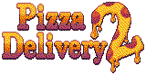

• UNC (Unreleased Nintendo Collective) is a major project focused on making
believable, high-quality "what-if" videos based on Nintendo games.
For example, what if Wario Land 3 was a scrapped N64 game? We aim to make
more of these videos soon, so make sure to watch Marionova's channel.
I also made songs on the soundtrack for this!! You can find a soundtrack release here.
Pizza Delivery 2
• Pizza Delivery 2 is a game made by fans, for fans. It's a satire on many things,
like adult TV shows, action films, puzzle games, Petscop...
It's being made by a team of talented individuals (and me for some reason), all who can
be found on Twitter under the LOVE PIZZA INC. grouping.